Using the simstandard package
W. Joel Schneider
2024-04-13
Source:vignettes/simstandard_tutorial.Rmd
simstandard_tutorial.RmdPurpose of simstandard
In the figure below, you can see a hypothetical structural model with its standardized loadings and path coefficients.
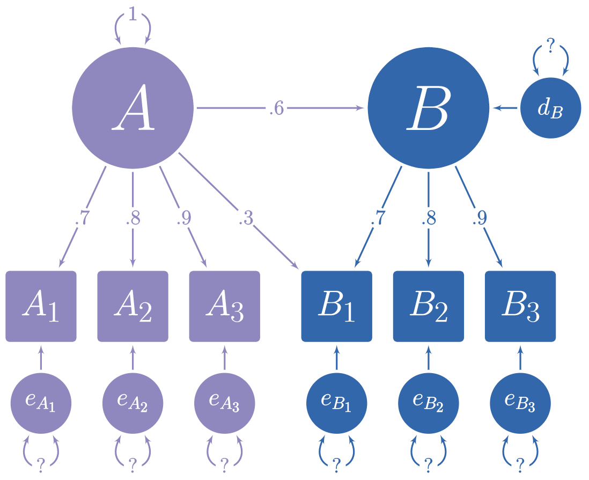
Suppose you need to simulate multivariate normal data based on this model, but you do not know the error variances and the latent disturbance variances needed to make your model produce standardized data. It is often difficult to find such values algebraically, and instead they must be found iteratively.
The simstandard package finds the standardized variances and creates standardized multivariate normal data using lavaan syntax. It can also create latent variable scores, error terms, disturbance terms, estimated factor scores, and equally weighted composite scores for each latent variable.
Generate Model-Based Multivariate Data
library(simstandard)
library(lavaan)
library(knitr)
library(dplyr)
library(ggplot2)
library(tibble)
library(tidyr)
# lavaan syntax for model
m <- "
A =~ 0.7 * A1 + 0.8 * A2 + 0.9 * A3 + 0.3 * B1
B =~ 0.7 * B1 + 0.8 * B2 + 0.9 * B3
B ~ 0.6 * A
"
# Simulate data
d <- sim_standardized(m, n = 100000)
# Display First 6 rows
head(d)
#> # A tibble: 6 × 15
#> A1 A2 A3 B1 B2 B3 A B e_A1 e_A2
#> <dbl> <dbl> <dbl> <dbl> <dbl> <dbl> <dbl> <dbl> <dbl> <dbl>
#> 1 1.51 0.884 1.03 2.38 3.58 2.87 1.31 2.79 0.595 -0.166
#> 2 1.57 0.587 0.514 0.334 0.509 1.12 1.05 0.678 0.834 -0.256
#> 3 -0.498 0.589 0.762 0.363 -0.313 0.705 0.0385 0.175 -0.525 0.558
#> 4 -0.269 -0.941 -0.763 -0.288 0.217 -0.683 -0.856 -0.458 0.330 -0.256
#> 5 -0.0163 -0.814 0.447 -0.226 0.723 0.203 1.04 -0.266 -0.747 -1.65
#> 6 -1.44 -0.192 -0.795 -1.13 -0.441 -0.822 -0.966 -0.671 -0.765 0.581
#> # ℹ 5 more variables: e_A3 <dbl>, e_B1 <dbl>, e_B2 <dbl>, e_B3 <dbl>, d_B <dbl>Let’s make a function to display correlations and covariance matrices:
ggcor <- function(d) {
as.data.frame(d) %>%
tibble::rownames_to_column("rowname") %>%
tidyr::pivot_longer(-rowname, names_to = "colname", values_to = "r") %>%
dplyr::mutate(rowname = forcats::fct_inorder(rowname) %>%
forcats::fct_rev()) %>%
dplyr::mutate(colname = factor(colname,
levels = rev(levels(rowname)))) %>%
ggplot(aes(colname, rowname, fill = r)) +
geom_tile(color = "gray90") +
geom_text(
aes(
label = formatC(r, digits = 2, format = "f") %>%
stringr::str_replace_all("0\\.", ".") %>%
stringr::str_replace_all("1.00", "1")
),
color = "white",
fontface = "bold",
family = "serif"
) +
scale_fill_gradient2(
NULL,
na.value = "gray20",
limits = c(-1.01, 1.01),
high = "#924552",
low = "#293999"
) +
coord_equal() +
scale_x_discrete(NULL, position = "top") +
scale_y_discrete(NULL) +
theme_light(base_family = "serif", base_size = 14)
}Because the data are standardized, the covariance matrix of the observed and latent variables should be nearly identical to a correlation matrix. The error and disturbance terms are not standardized.
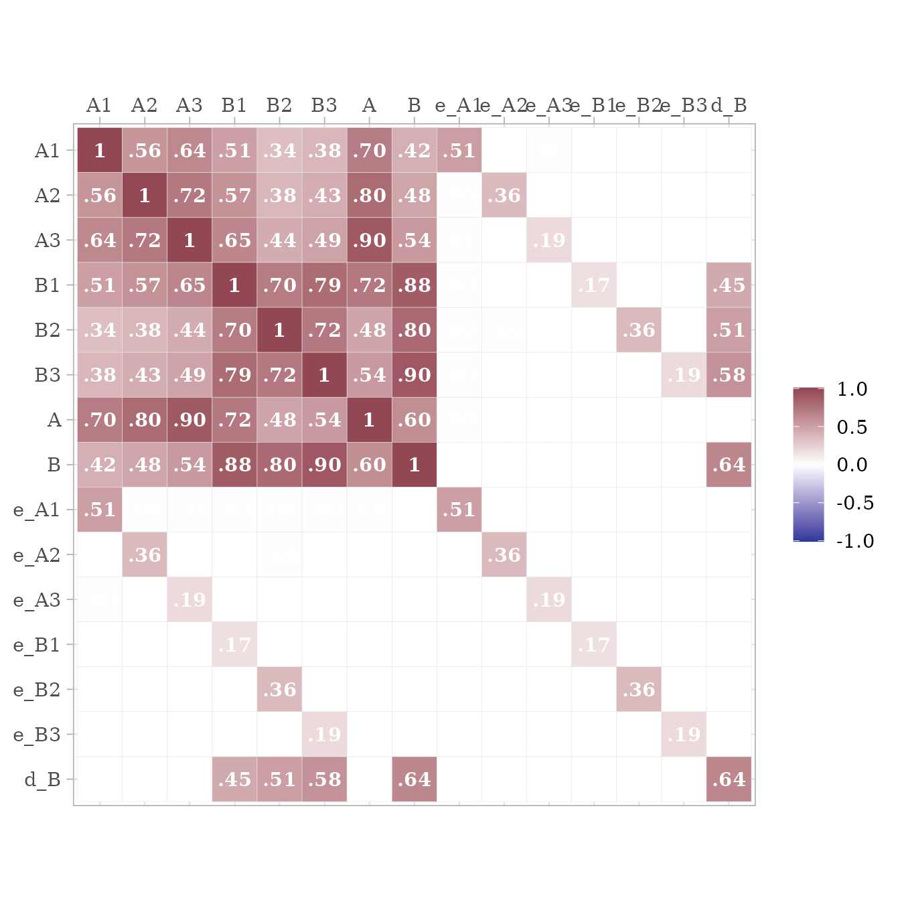
To return only the observed variables
d <- sim_standardized(m,
n = 100000,
latent = FALSE,
errors = FALSE)
# Display First 6 rows
head(d)
#> # A tibble: 6 × 6
#> A1 A2 A3 B1 B2 B3
#> <dbl> <dbl> <dbl> <dbl> <dbl> <dbl>
#> 1 1.61 1.15 2.06 0.903 -0.0472 -0.0756
#> 2 1.46 1.50 0.684 0.125 -0.483 0.339
#> 3 -0.891 -1.19 -1.22 -0.517 0.396 -0.725
#> 4 0.133 -1.55 -0.787 -1.00 -0.171 -1.18
#> 5 -0.929 -1.64 -0.964 -1.23 -1.51 -1.01
#> 6 -0.434 -0.242 -0.0973 -0.869 -0.781 -1.21Comparison with lavaan::simulateData
I love the lavaan package. However, one aspect of one function in
lavaan is not quite right yet. lavaan’s simulateData
function is known
to generate non-standardized data, even when the
standardized parameter is set to TRUE. See how
it creates variable Y with a variance higher than 1.
test_model <- "
Y ~ -.75 * X_1 + .25 * X_2
X =~ .75 * X_1 + .75 * X_2
"
library(lavaan)
d_lavaan <- simulateData(model = test_model,
sample.nobs = 100000,
standardized = TRUE)
cov(d_lavaan) %>%
ggcor()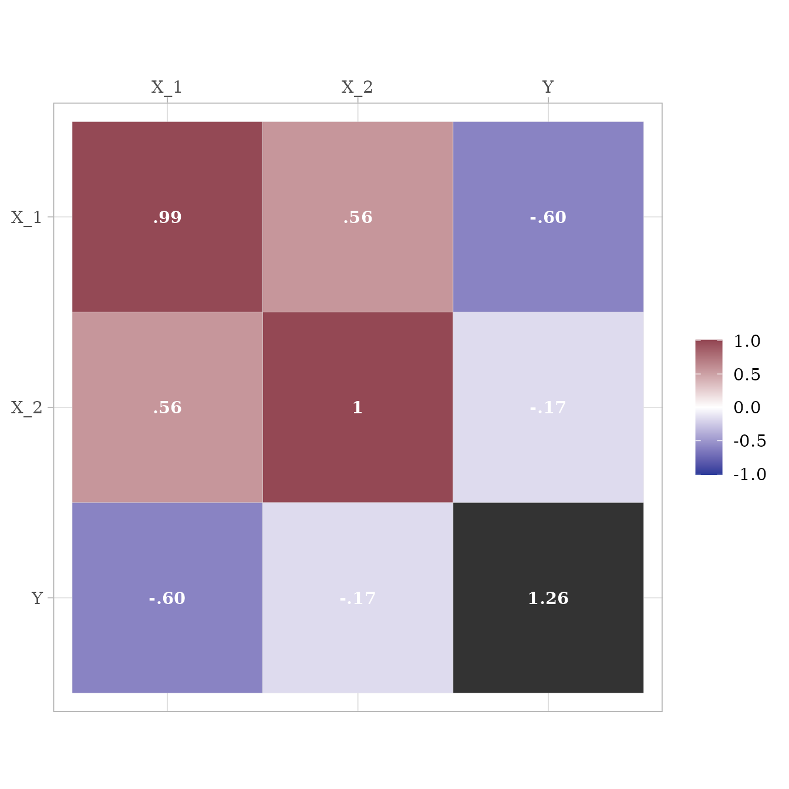
With the same test model, simstandard will calculate variables with variances of 1.
sim_standardized(test_model,
n = 100000,
errors = FALSE) %>%
cov %>%
ggcor()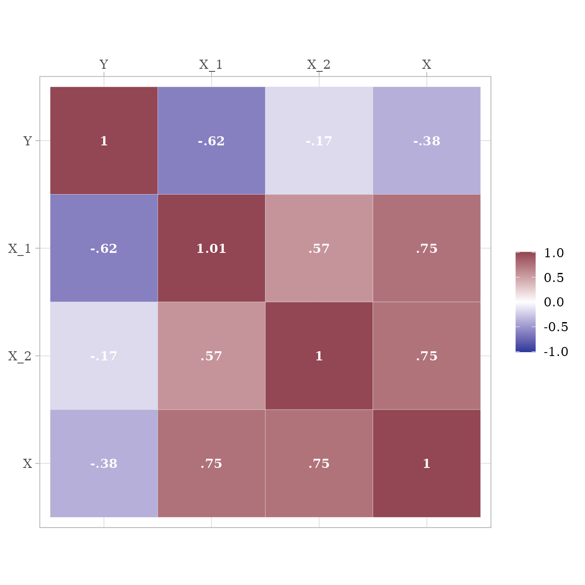
Inspecting model matrices
You can inspect the matrices that simstandard uses to create the data
by calling simstandardized_matrices.
matrices <- sim_standardized_matrices(m)The A matrix contains all the asymmetric path coefficients (i.e., the loadings and the structural coefficients). These coefficients are specified in the lavaan model syntax.
matrices$RAM_matrices$A %>%
ggcor()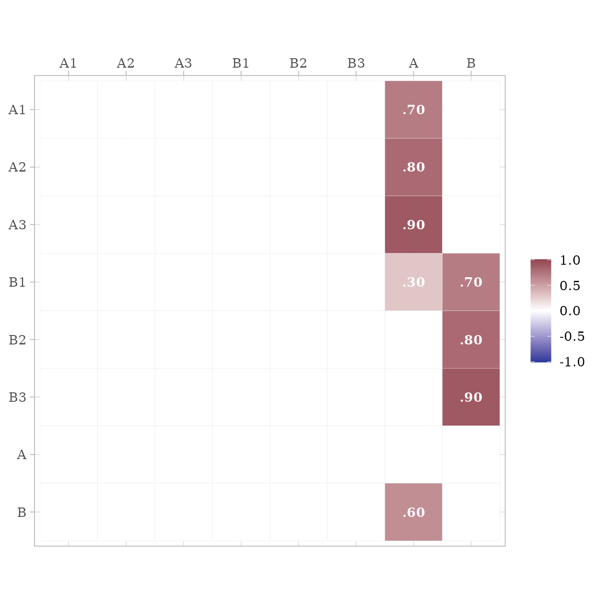
The S matrix contains all the symmetric path coefficients (i.e., the variances and correlations of the observed and latent variables). For endogenous variables, the variances and correlations refer to the variance and correlations of the variable’s associated error or disturbance term. In this case, A is the only endogenous variable, and thus its variance on the diagonal of the S matrix is 1.
matrices$RAM_matrices$S %>%
ggcor()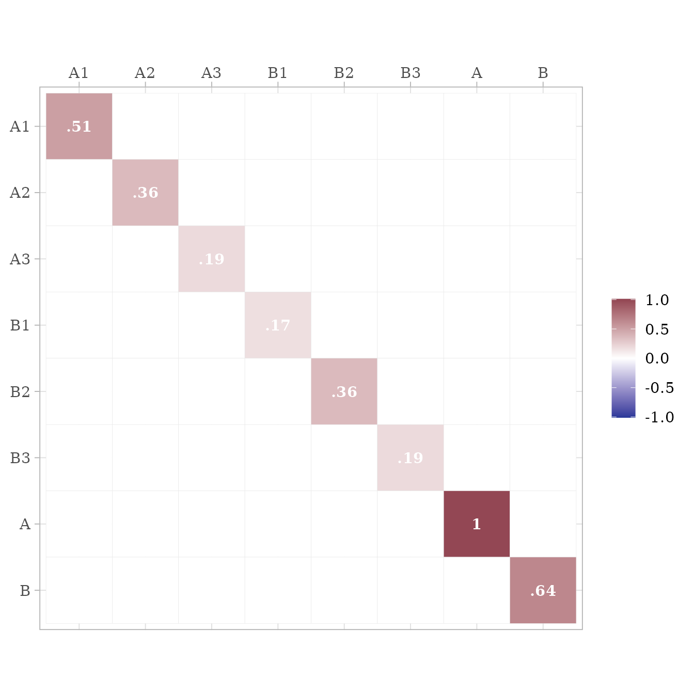
Thus, we can use these results to insert the missing values from the path diagram at the beginning of this tutorial
Estimated Factor Scores
If you want to estimate factor scores using the regression method
(i.e., Thurstone’s method), set factor_scores to
TRUE. All scores ending in FS are factor score
estimates.
m <- "
A =~ 0.9 * A1 + 0.8 * A2 + 0.7 * A3
"
sim_standardized(m,
n = 100000,
factor_scores = TRUE) %>%
head()
#> # A tibble: 6 × 8
#> A1 A2 A3 A e_A1 e_A2 e_A3 A_FS
#> <dbl> <dbl> <dbl> <dbl> <dbl> <dbl> <dbl> <dbl>
#> 1 -0.186 -0.189 -0.291 0.0356 -0.218 -0.218 -0.316 -0.212
#> 2 -1.75 -0.500 -0.411 -1.50 -0.398 0.701 0.639 -1.24
#> 3 -0.957 -0.851 -2.47 -1.10 0.0331 0.0293 -1.70 -1.23
#> 4 0.836 1.37 -0.980 1.30 -0.337 0.322 -1.89 0.706
#> 5 -0.780 -0.411 -1.96 -1.31 0.397 0.634 -1.05 -0.912
#> 6 1.03 -0.243 0.505 0.465 0.613 -0.615 0.179 0.630Adding factor scores to new data
Suppose you have some new data and wish to add estimated factor
scores to it. The add_factor_scores function will take your
data and return your data with the estimated factors added to it.
d <- tibble::tribble(
~A1, ~A2, ~A3,
2L, 2.5, 1.3,
-1L, -1.5, -2.1
)
add_factor_scores(d, m)
#> A1 A2 A3 A_FS
#> 1 2 2.5 1.3 2.101242
#> 2 -1 -1.5 -2.1 -1.368772Composite Scores
If you want to calculate equally-weighted composite scores based on the indicators of each latent variable, set `composites = TRUE’.
m <- "
A =~ 0.9 * A1 + 0.8 * A2 + 0.7 * A3
"
sim_standardized(
m,
n = 100000,
composites = TRUE
) %>%
head()
#> # A tibble: 6 × 8
#> A1 A2 A3 A e_A1 e_A2 e_A3 A_Composite
#> <dbl> <dbl> <dbl> <dbl> <dbl> <dbl> <dbl> <dbl>
#> 1 0.138 -0.699 -0.234 -0.446 0.539 -0.342 0.0781 -0.304
#> 2 -0.600 -0.794 0.121 -0.472 -0.176 -0.416 0.452 -0.487
#> 3 -0.339 0.611 0.240 0.150 -0.474 0.491 0.135 0.196
#> 4 1.56 1.38 1.39 1.27 0.417 0.367 0.502 1.66
#> 5 -1.51 -0.985 0.420 -1.46 -0.199 0.182 1.44 -0.795
#> 6 0.527 1.07 2.20 0.416 0.152 0.736 1.91 1.45Composite scores with equal weights can also be added to new data:
add_composite_scores(d, m)
#> A1 A2 A3 A_Composite
#> 1 2 2.5 1.3 2.220935
#> 2 -1 -1.5 -2.1 -1.761431Return lavaan syntax with all parameters set free
Suppose that we want to verify that the data generated by the
sim_standardized function is correct. We will need an
analogous model, but with all the fixed parameters set free. We could
manually remove the fixed parameter values, but with large models the
process is tedious and introduces a risk of error. The
fixed2free function painlessly removes the fixed parameters
values from the model.
# lavaan syntax for model
m <- "
A =~ 0.7 * A1 + 0.8 * A2 + 0.9 * A3 + 0.3 * B1
B =~ 0.7 * B1 + 0.8 * B2 + 0.9 * B3
B ~ 0.6 * A
"
# Make model m free
m_free <- fixed2free(m)
# Display model m_free
cat(m_free)
#> B ~ A
#> A =~ A1 + A2 + A3 + B1
#> B =~ B1 + B2 + B3Now let’s use lavaan to see if the observed data in d
conform to the model in m_free.
# Set the random number generator for reproducible results
set.seed(12)
# Generate data based on model m
d <- sim_standardized(
m,
n = 100000,
latent = FALSE,
errors = FALSE)
# Evaluate the fit of model m_free on data d
library(lavaan)
lav_results <- sem(
model = m_free,
data = d)
# Display summary of model
summary(
lav_results,
standardized = TRUE,
fit.measures = TRUE)
#> lavaan 0.6.17 ended normally after 27 iterations
#>
#> Estimator ML
#> Optimization method NLMINB
#> Number of model parameters 14
#>
#> Number of observations 100000
#>
#> Model Test User Model:
#>
#> Test statistic 7.493
#> Degrees of freedom 7
#> P-value (Chi-square) 0.379
#>
#> Model Test Baseline Model:
#>
#> Test statistic 371352.125
#> Degrees of freedom 15
#> P-value 0.000
#>
#> User Model versus Baseline Model:
#>
#> Comparative Fit Index (CFI) 1.000
#> Tucker-Lewis Index (TLI) 1.000
#>
#> Loglikelihood and Information Criteria:
#>
#> Loglikelihood user model (H0) -666610.982
#> Loglikelihood unrestricted model (H1) -666607.236
#>
#> Akaike (AIC) 1333249.965
#> Bayesian (BIC) 1333383.146
#> Sample-size adjusted Bayesian (SABIC) 1333338.653
#>
#> Root Mean Square Error of Approximation:
#>
#> RMSEA 0.001
#> 90 Percent confidence interval - lower 0.000
#> 90 Percent confidence interval - upper 0.004
#> P-value H_0: RMSEA <= 0.050 1.000
#> P-value H_0: RMSEA >= 0.080 0.000
#>
#> Standardized Root Mean Square Residual:
#>
#> SRMR 0.001
#>
#> Parameter Estimates:
#>
#> Standard errors Standard
#> Information Expected
#> Information saturated (h1) model Structured
#>
#> Latent Variables:
#> Estimate Std.Err z-value P(>|z|) Std.lv Std.all
#> A =~
#> A1 1.000 0.703 0.703
#> A2 1.142 0.005 231.116 0.000 0.803 0.800
#> A3 1.284 0.005 247.676 0.000 0.903 0.901
#> B1 0.427 0.004 114.547 0.000 0.300 0.300
#> B =~
#> B1 1.000 0.701 0.700
#> B2 1.139 0.005 238.139 0.000 0.798 0.798
#> B3 1.288 0.005 247.366 0.000 0.902 0.901
#>
#> Regressions:
#> Estimate Std.Err z-value P(>|z|) Std.lv Std.all
#> B ~
#> A 0.597 0.004 141.196 0.000 0.599 0.599
#>
#> Variances:
#> Estimate Std.Err z-value P(>|z|) Std.lv Std.all
#> .A1 0.507 0.003 194.579 0.000 0.507 0.506
#> .A2 0.362 0.002 165.904 0.000 0.362 0.359
#> .A3 0.188 0.002 97.276 0.000 0.188 0.188
#> .B1 0.170 0.001 130.982 0.000 0.170 0.169
#> .B2 0.362 0.002 178.775 0.000 0.362 0.362
#> .B3 0.189 0.002 106.863 0.000 0.189 0.189
#> A 0.495 0.004 121.519 0.000 1.000 1.000
#> .B 0.315 0.003 124.248 0.000 0.641 0.641
# Extract RAM paths
ram <- lav2ram(lav_results)
# Display asymmetric paths (i.e., single-headed arrows for
# loadings and structure coefficients)
ram$A %>% ggcor()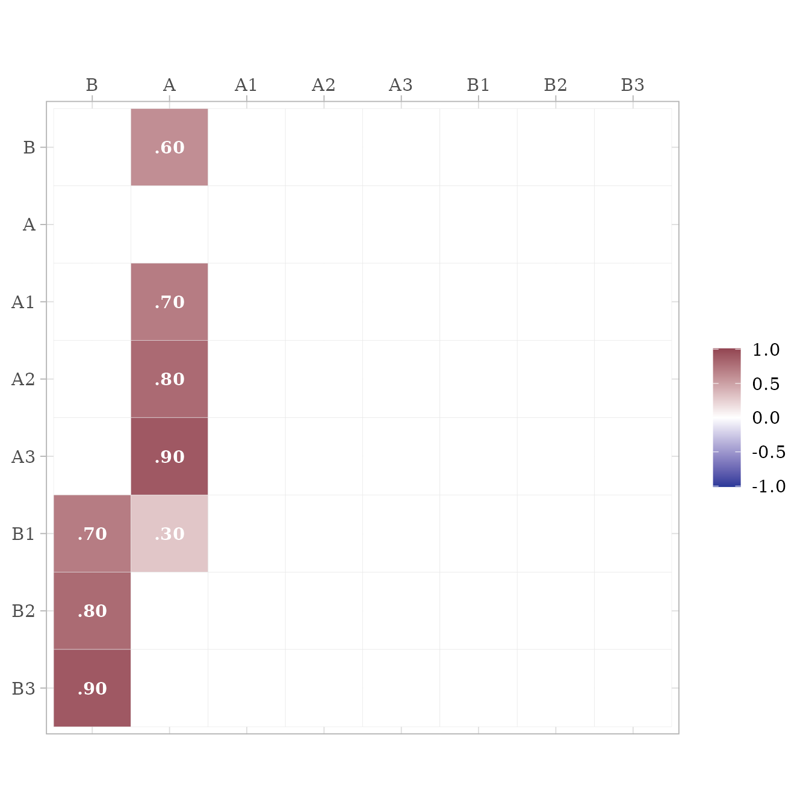
# Display symmetric paths (i.e., curved double-headed arrows
# exogenous variances, error variances, disturbance variances,
# and any covariances among these)
ram$S %>% ggcor()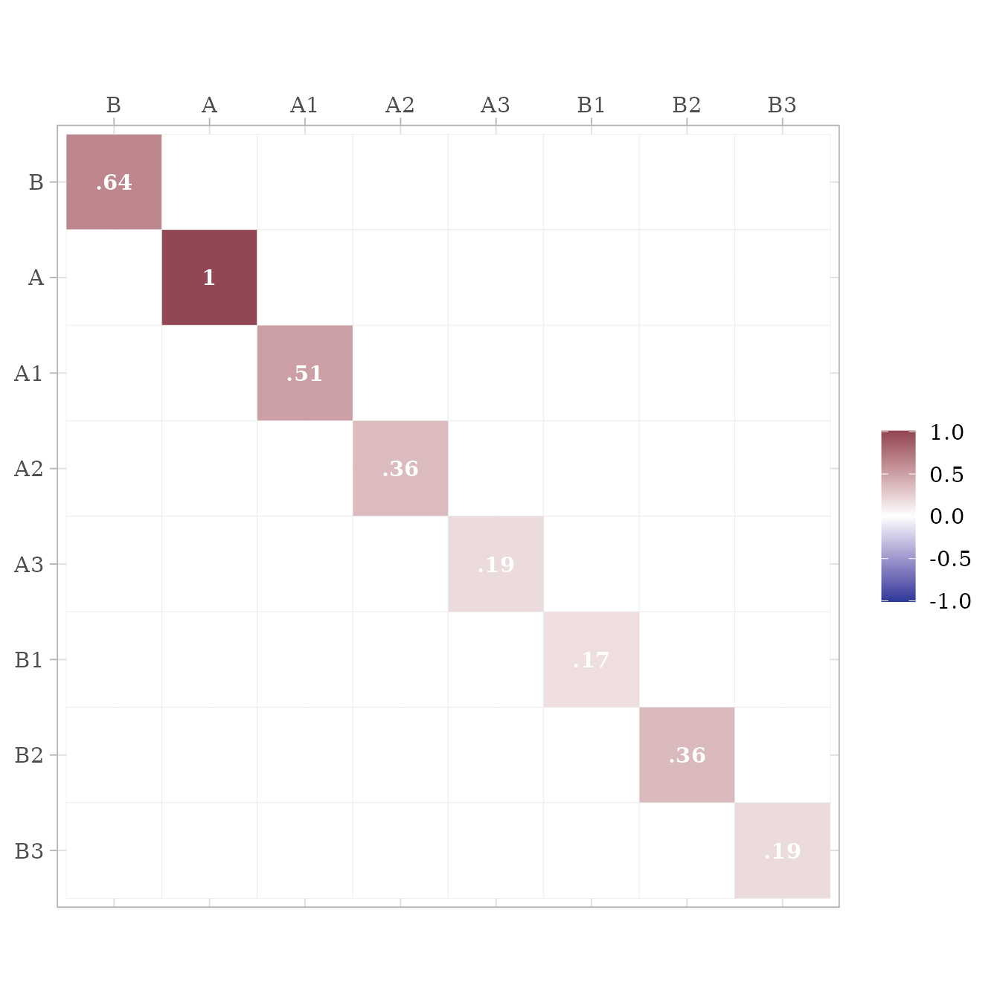
As can be seen, all the fit measures indicate a near-perfect fit, and
the parameter estimates are within rounding error of the fixed
parameters in model m.
Return lavaan syntax for a model with standardized variances specified
Although the simstandardized function will generate data
for you, you might want to use a function from a different package
instead, such as lavaan::simulateData or
simsem::sim. In this case, you can use the
model_complete function to output the lavaan syntax for a
standardized model with all standardized variances specified.
# Specify model
m <- "
A =~ 0.7 * A1 + 0.8 * A2 + 0.9 * A3 + 0.3 * B1
B =~ 0.7 * B1 + 0.8 * B2 + 0.9 * B3
B ~ 0.6 * A
"
m_complete <- model_complete(m)
# Display complete model
cat(m_complete)
#>
#> A =~ 0.7 * A1 + 0.8 * A2 + 0.9 * A3 + 0.3 * B1
#> B =~ 0.7 * B1 + 0.8 * B2 + 0.9 * B3
#> B ~ 0.6 * A
#>
#> # Variances
#> A1 ~~ 0.51 * A1
#> A2 ~~ 0.36 * A2
#> A3 ~~ 0.19 * A3
#> B1 ~~ 0.168 * B1
#> B2 ~~ 0.36 * B2
#> B3 ~~ 0.19 * B3
#> A ~~ 1 * A
#> B ~~ 0.64 * BReturn lavaan syntax from matrices
Suppose that a research article provides model coefficients in a
table. We could spend time creating lavaan syntax by hand, but such work
can be tedious. The matrix2lavaan function can help save
time when the models are already specified in matrix form.
The measurement model
The measurement model can be specified with a matrix in which the column names are latent variables and the row names are indicator variables.
Here we have three latent variables, Vocabulary, Working Memory Capacity, and Reading, each defined by three indicator variables.
m_meas <- matrix(c(
.8, 0, 0, # VC1
.9, 0, 0, # VC2
.7, 0, 0, # VC3
0, .6, 0, # WM1
0, .7, 0, # WM2
0, .8, 0, # WM3
0, 0, .9, # RD1
0, 0, .7, # RD2
0, 0, .8), # RD3
nrow = 9,
byrow = TRUE,
dimnames = list(
c("VC1", "VC2", "VC3",
"WM1", "WM2", "WM3",
"RD1", "RD2", "RD3"),
c("Vocabulary", "WorkingMemory", "Reading")
))The structural model
The structural model can be specified with a matrix in which the predictors are the column names and the criterion variables are the row names.
Here we have Vocabulary and Working Memory Capacity predicting Reading Scores.
m_struct <- matrix(c(0.4, 0.3),
ncol = 2,
dimnames = list("Reading",
c("Vocabulary", "WorkingMemory")))This could have been a 3 by 3 matrix with zeroes (which are ignored).
Covariances
The variances and covariances must be specified as a symmetric matrix, though variables can be omitted.
Here we specify that the latent variables Vocabulary and Working Memory Capacity are correlated.
Using the matrix2lavaan function
The matrix2lavaan function takes arguments for the
measurement model, structural model, and covariances. Any of the three
matrices can be omitted.
model <- matrix2lavaan(measurement_model = m_meas,
structural_model = m_struct,
covariances = m_cov)
cat(model)
#> Vocabulary =~ 0.8 * VC1 + 0.9 * VC2 + 0.7 * VC3
#> WorkingMemory =~ 0.6 * WM1 + 0.7 * WM2 + 0.8 * WM3
#> Reading =~ 0.9 * RD1 + 0.7 * RD2 + 0.8 * RD3
#> Reading ~ 0.4 * Vocabulary + 0.3 * WorkingMemory
#> Vocabulary ~~ 0.5 * WorkingMemorySpecifying models with data.frames instead of matrices
As an alternative, the matrix2lavaan function can take
data.frames (or tibbles) with either rownames or the first column as a
character vector.
# A tibble with indicator variables listed in the first column
m_meas <- tibble::tribble(
~Test, ~Vocabulary, ~WorkingMemory, ~Reading,
"VC1", 0.8, 0, 0,
"VC2", 0.9, 0, 0,
"VC3", 0.7, 0, 0,
"WM1", 0, 0.6, 0,
"WM2", 0, 0.7, 0,
"WM3", 0, 0.8, 0,
"RD1", 0, 0, 0.9,
"RD2", 0, 0, 0.7,
"RD3", 0, 0, 0.8)
# A data.frame with criterion variable specified as a row name
m_struct <- data.frame(Vocabulary = 0.4,
WorkingMemory = 0.3,
row.names = "Reading")
# A data.frame with variable names specified as row names
m_cov <- data.frame(Vocabulary = c(1, 0.5),
WorkingMemory = c(0.5, 1))
rownames(m_cov) <- c("Vocabulary", "WorkingMemory")
model <- matrix2lavaan(measurement_model = m_meas,
structural_model = m_struct,
covariances = m_cov)Return model-implied correlation matrices
After specifying a standardized model with lavaan syntax, we can extract a model-implied correlation matrix. By default, we extract just the correlations among the observed variables.
get_model_implied_correlations(m) %>%
ggcor()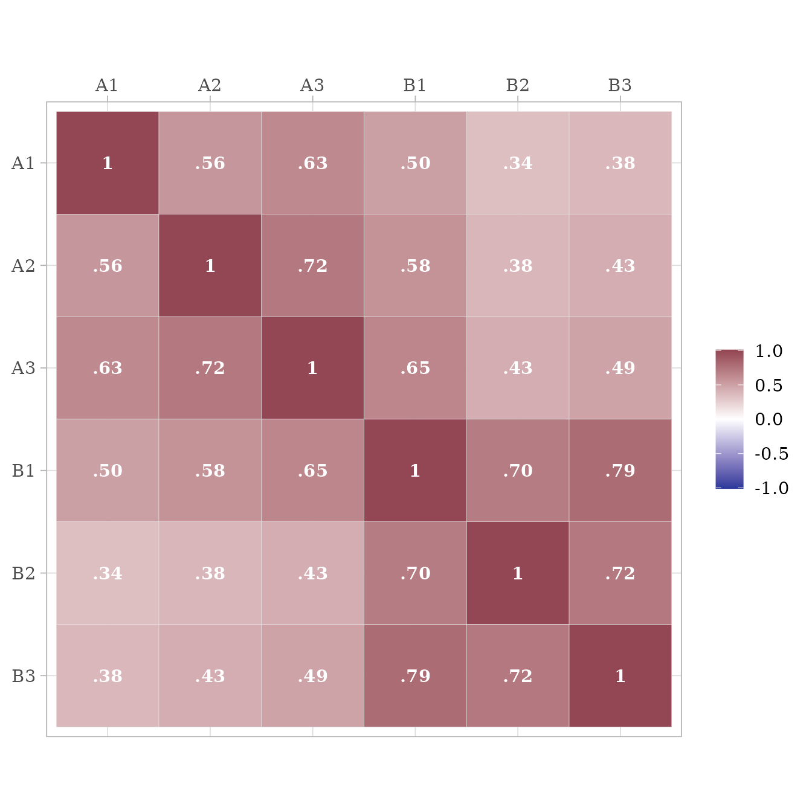
It is possible to extract the model-implied correlations among the observed variables, latent variables, error terms, factor scores, and composite variables. For example, here we extract correlations among the observed and latent variables:
get_model_implied_correlations(
m,
latent = TRUE) %>%
ggcor()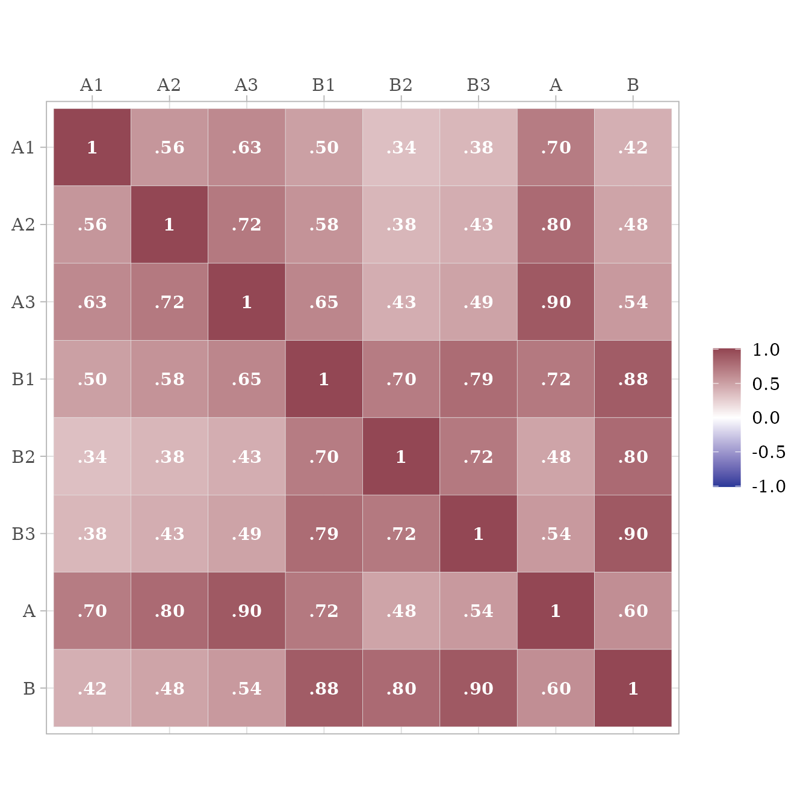
# lavaan syntax for model
m <- "
A =~ 0.7 * A1 + 0.8 * A2 + 0.9 * A3 + 0.3 * B1
B =~ 0.7 * B1 + 0.8 * B2 + 0.9 * B3
B ~ 0.6 * A
# Variances
A1 ~~ 0.51 * A1
A2 ~~ 0.36 * A2
A3 ~~ 0.19 * A3
B1 ~~ 0.168 * B1
B2 ~~ 0.36 * B2
B3 ~~ 0.19 * B3
A ~~ 1 * A
B ~~ 0.64 * B
"
m_fit <- lavaanify(m)
# mRAM <- lavMatrixRepresentation(m_fit,
# representation = "RAM")
v <- list(
v_latent_exogenous = lavNames(m_fit, "lv.x"),
v_latent_endogenous = lavNames(m_fit, "lv.nox"),
v_observed_exogenous = lavNames(m_fit, "ov.x"),
v_observed_endogenous = lavNames(m_fit, "ov.nox"),
v_observed_indicator = lavNames(m_fit, "ov.ind"),
v_disturbance = paste0("d_", lavNames(m_fit, "lv.nox")),
v_error = paste0("e_", lavNames(m_fit, "ov.nox"))
)
v$v_residual <- c(v$v_error,
v$v_disturbance)
v$v_exogenous <- c(v$v_residual,
v$v_observed_exogenous,
v$v_latent_exogenous)
v$v_endogenous <- c(v$v_observed_endogenous,
v$v_latent_endogenous)
v$v_modeled <- c(v$v_endogenous,
v$v_latent_exogenous,
v$v_observed_exogenous)
v$v_observed <- c(v$v_observed_exogenous,
v$v_observed_endogenous)
v$v_latent <- c(v$v_latent_exogenous,
v$v_latent_endogenous)
# Reduced ram
rram <- list()
rram$A <- matrix(0,
nrow = length(v$v_modeled),
ncol = length(v$v_modeled),
dimnames = list(v$v_modeled, v$v_modeled))
rram$S <- rram$A
rram$F <- matrix(
0,
nrow = length(v$v_observed),
ncol = length(v$v_modeled),
dimnames = list(v$v_observed, v$v_modeled)
)
m_fit |>
filter(op == "=~") |>
select(rhs, lhs, ustart)
#> rhs lhs ustart
#> 1 A1 A 0.7
#> 2 A2 A 0.8
#> 3 A3 A 0.9
#> 4 B1 A 0.3
#> 5 B1 B 0.7
#> 6 B2 B 0.8
#> 7 B3 B 0.9
m_fit |>
filter(op == "~") |>
select(lhs, rhs, ustart)
#> lhs rhs ustart
#> 1 B A 0.6
d_A <- m_fit |>
filter(op %in% c("=~", "~")) |>
mutate(cause = if_else(op == "~", rhs, lhs),
effect = if_else(op == "~", lhs, rhs))
d_S <- m_fit |>
filter(op %in% c("~~"))
rram$A[cbind(d_A$effect, d_A$cause)] <- d_A$ustart
rram$S[cbind(d_S$lhs, d_S$rhs)] <- d_S$ustart
rram$S[cbind(d_S$rhs, d_S$lhs)] <- d_S$ustart
rram$F[cbind(v$v_observed, v$v_observed)] <- 1
dimnames(rram$S) <- list(v$v_exogenous, v$v_exogenous)
extended_diag <- matrix(0, nrow = nrow(rram$A), ncol = length(v$v_residual)) |>
`dimnames<-`(list(rownames(rram$A), v$v_residual)) |>
`diag<-`(sqrt(diag(rram$S[v$v_residual, v$v_residual])))
extended_A <- cbind(rram$A, extended_diag) |>
rbind(matrix(0, nrow = length(v$v_residual),
ncol = length(v$v_residual) + nrow(rram$A))) %>%
`rownames<-`(colnames(.))
# Identity matrix the same size as A and S
I <- diag(nrow(extended_A))
# Inverted I - A for total effects (direct + indirect)
iA <- solve(I - extended_A)
# Exogenous covariance matrix
extended_S <- matrix(0,
nrow = nrow(extended_A),
ncol = ncol(extended_A)) |>
`dimnames<-`(dimnames(extended_A))
# diag(extended_S) <- 1
extended_S[cbind(rownames(rram$S), colnames(rram$S))] <- 1
extended_cov <- iA %*% extended_S %*% t(iA)
extended_mu <- rep(0, nrow(extended_A)) |> `names<-`(rownames(extended_A))
extended_mu[v$v_residual] <- 0
eigen(rram$S, symmetric = T)
#> eigen() decomposition
#> $values
#> [1] 1.000 0.640 0.510 0.360 0.360 0.190 0.190 0.168
#>
#> $vectors
#> [,1] [,2] [,3] [,4] [,5] [,6] [,7] [,8]
#> [1,] 0 0 1 0 0 0 0 0
#> [2,] 0 0 0 1 0 0 0 0
#> [3,] 0 0 0 0 0 0 1 0
#> [4,] 0 0 0 0 0 0 0 1
#> [5,] 0 0 0 0 1 0 0 0
#> [6,] 0 0 0 0 0 1 0 0
#> [7,] 0 1 0 0 0 0 0 0
#> [8,] 1 0 0 0 0 0 0 0
((iA %*% extended_S %*% t(iA))[,v$v_exogenous] ^ 2) |>
as.data.frame() |>
rownames_to_column("variable") |>
pivot_longer(-variable, names_to = "exogenous") |>
filter(value != 0) |>
arrange(exogenous) |>
ggplot(aes(variable, value)) +
geom_col(aes(fill = exogenous))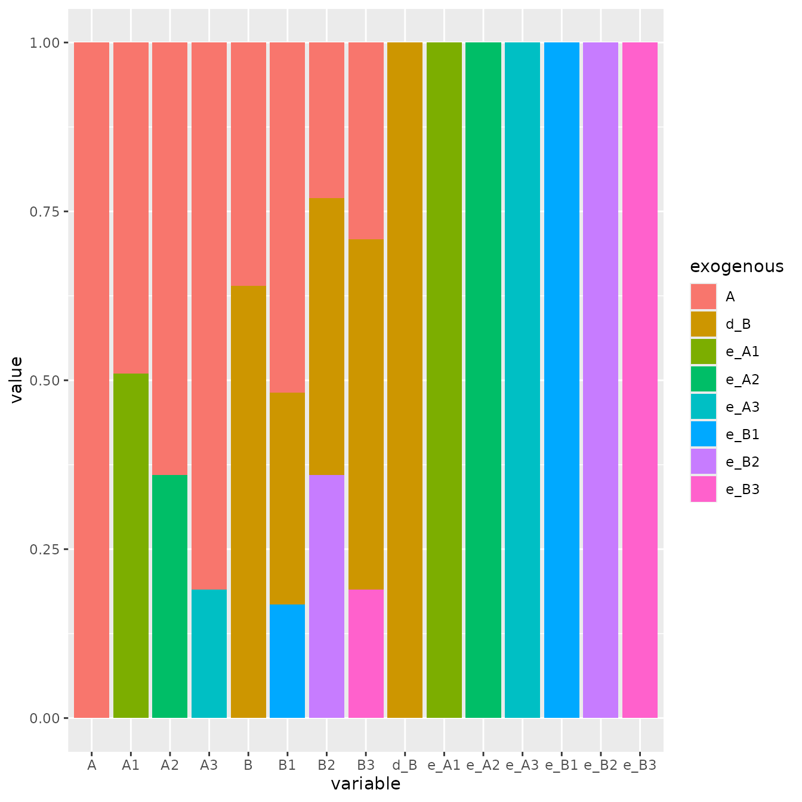
(iA %*% extended_S %*% t(iA))[v$v_endogenous,v$v_exogenous]
#> e_A1 e_A2 e_A3 e_B1 e_B2 e_B3 d_B A
#> A1 0.7141428 0.0 0.0000000 0.000000 0.0 0.0000000 0.00 0.70
#> A2 0.0000000 0.6 0.0000000 0.000000 0.0 0.0000000 0.00 0.80
#> A3 0.0000000 0.0 0.4358899 0.000000 0.0 0.0000000 0.00 0.90
#> B1 0.0000000 0.0 0.0000000 0.409878 0.0 0.0000000 0.56 0.72
#> B2 0.0000000 0.0 0.0000000 0.000000 0.6 0.0000000 0.64 0.48
#> B3 0.0000000 0.0 0.0000000 0.000000 0.0 0.4358899 0.72 0.54
#> B 0.0000000 0.0 0.0000000 0.000000 0.0 0.0000000 0.80 0.60